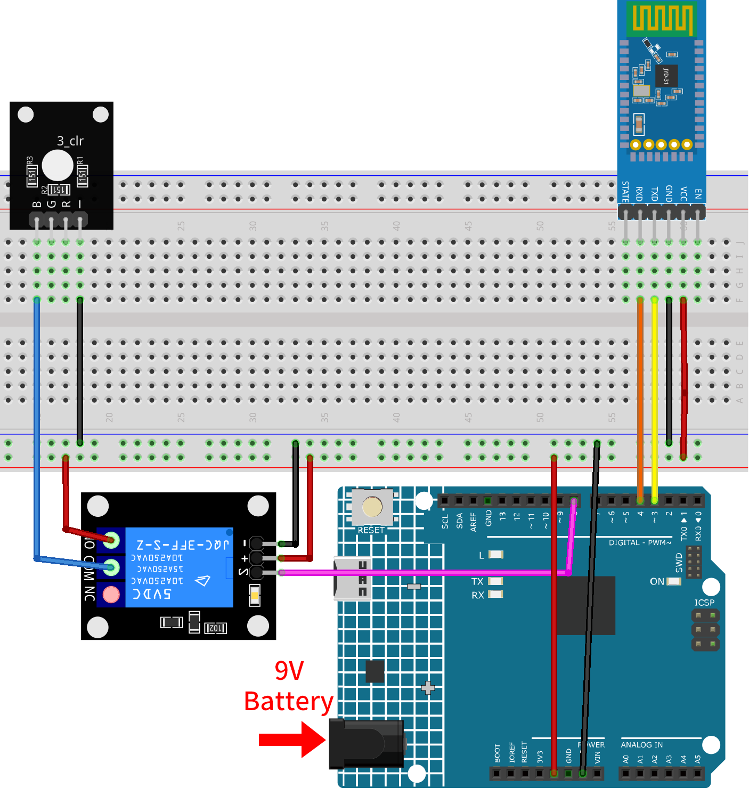
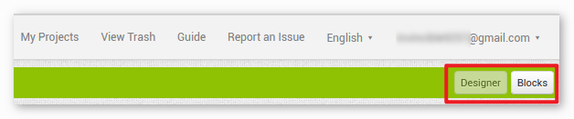
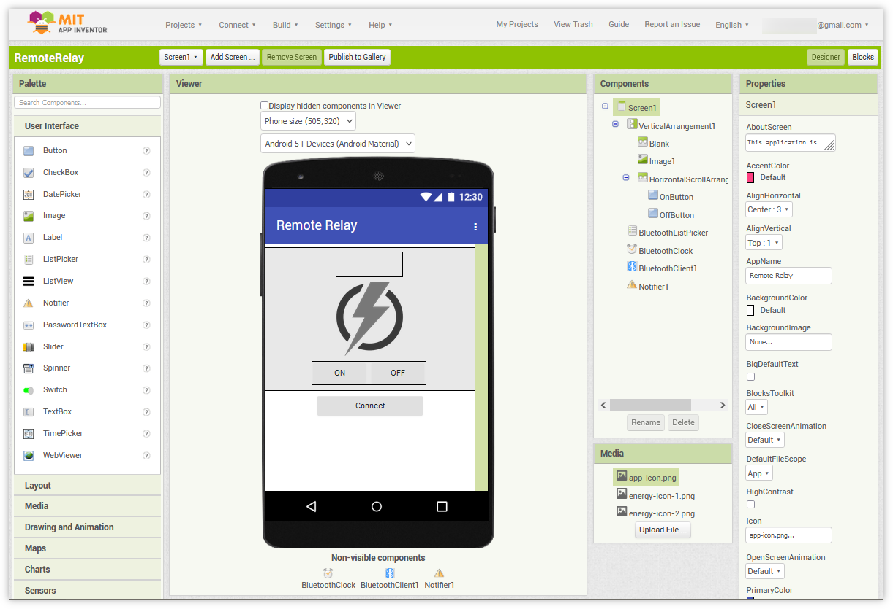
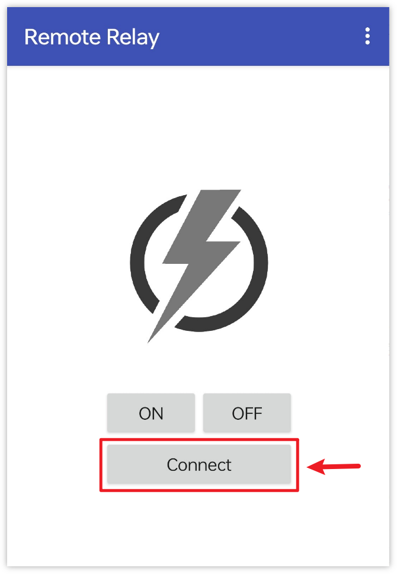
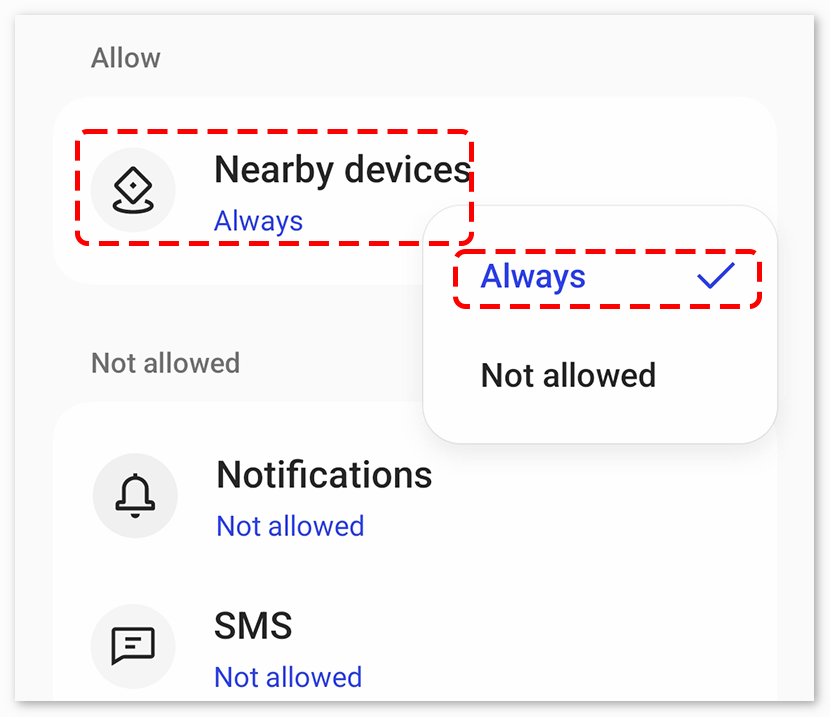

Note
Hello, welcome to the SunFounder Raspberry Pi & Arduino & ESP32 Enthusiasts Community on Facebook! Dive deeper into Raspberry Pi, Arduino, and ESP32 with fellow enthusiasts.
Why Join?
Expert Support: Solve post-sale issues and technical challenges with help from our community and team.
Learn & Share: Exchange tips and tutorials to enhance your skills.
Exclusive Previews: Get early access to new product announcements and sneak peeks.
Special Discounts: Enjoy exclusive discounts on our newest products.
Festive Promotions and Giveaways: Take part in giveaways and holiday promotions.
👉 Ready to explore and create with us? Click [here] and join today!
Bluetooth Remote Relay
This project uses an Android app created with MIT App Inventor to remotely control a relay module through the JDY-31 Bluetooth module connected to an Arduino Uno. When the app’s buttons are pressed, it sends a simple command (‘1’ or ‘0’) to the Arduino. When the Arduino receives the command ‘1’ via Bluetooth, it activates the relay, and when it receives ‘0’, it deactivates the relay. This provides a user-friendly interface on a smartphone to control devices connected to the relay.
The Android application will be constructed utilizing a complimentary web-based platform known as MIT App Inventor. The project presents an excellent opportunity to gain familiarity with the interfacing of an Arduino with a smartphone.
1. Build the Circuit
Warning
The following example demonstrates using a relay to control an LED module. While you can connect the relay to other appliances in actual applications, extreme caution is required when dealing with HIGH AC voltage. Improper or incorrect use can lead to severe injury or even death. Therefore, it is intended for people who are familiar with and knowledgeable about HIGH AC voltage. Always prioritize safety.


2. Create the Android App
The Android application will be developed using a free web application known as MIT App Inventor. MIT App Inventor serves as an excellent starting point for Android development, owing to its intuitive drag-and-drop features allowing for the creation of simplistic applications.
Now, let’s begin.
Go to Get Started with MIT App Inventor, and click “online tool” to login. You will require a Google account to register with MIT App Inventor.

After logging in, navigate to Projects -> Import project (.aia) from my computer. Subsequently, upload the
RemoteRelay.aiafile located in the pathultimate-sensor-kit\code\iot_project_esp01\bluetooth\08-Bluetooth_remote_relay.You can also directly download here:
RemoteRelay.aia
Upon uploading the
.aiafile, you will see the application on the MIT App Inventor software. This is a pre-configured template. You can modify this template after you have familiarized yourself with MIT App Inventor through the following steps.In MIT App Inventor, you have 2 primary sections: the Designer and the Blocks. You can switch between these two sections in the upper right corner of the page.

The Designer allows you to add buttons, text, screens, and modify the overall aesthetic of your application.

Next, there’s the Blocks section. This section lets you craft custom functionalities for your app, allowing you to program each component on the app’s GUI to achieve desired features.

To install the application on a smartphone, navigate to the Build tab.

You can generate a
.apkfile. After selecting this option, a page will appear allowing you to choose between downloading a.apkfile or scanning a QR code for installation. Follow the installation guide to complete the application installation.You also download our pre-compiled APK here:
RemoteRelay.apkIf you wish to upload this app to Google Play or another app marketplace, you can generate a
.aabfile.
3. Upload the Code
Open the
08-Bluetooth_remote_relay.inofile under the path ofultimate-sensor-kit\code\iot_project_esp01\bluetooth\08-Bluetooth_remote_relay, or copy this code into Arduino IDE.After selecting the correct board and port, click the Upload button.
Open the Serial monitor(set baudrate to 9600) to view debug messages.
4. App and Bluetooth module Connection
Ensure that the application created earlier is installed on your smartphone.
Initially, turn on Bluetooth on your smartphone.

Navigate to the Bluetooth settings on your smartphone and look for names like JDY-31-SPP.

After clicking it, agree to the Pair request in the pop-up window. If prompted for a pairing code, please enter “1234”.

Now open the newly installed Remote Relay APP.
In the APP, click on Connect button to establish a connection between the APP and Bluetooth module.

This page displays a list of all paired Bluetooth devices. Choose the
xx.xx.xx.xx.xx.xx JDY-31-SPPoption from the list. The name of each device is listed next to its MAC address.
If you don’t see any devices on the page shown above, it could be because this app is not authorized to scan for nearby devices. In such a case, you will need to adjust the settings manually.
To access the APP Info page, long-press the app icon and select it. Alternatively, if you have another method to reach this page, use that instead.

Navigate to the Permissions page.

To enable the APP to scan for nearby devices, go to Nearby devices and select Always.

Now, restart the APP and repeat steps 5 and 6 to successfully connect to Bluetooth.
After a successful connection, you will be redirected to the main page. Click the “ON” or “OFF” button to turn on or off the relay.
Note
When the MAC address of Bluetooth contains “1”, the relay will be turned on and then quickly turned off after the first successful Bluetooth connection. Because when the Bluetooth is connected, the MAC address will be sent to Arduino. Arduino detects “1” and then opens the relay. After Bluetooth initialization, the app sends 0 to Arduino via Bluetooth to ensure that the initial state of the relay is closed after connection.


5. Code explanation
Library and Global Variable Initialization
#include <SoftwareSerial.h> const int bluetoothTx = 3; const int bluetoothRx = 4; SoftwareSerial bleSerial(bluetoothTx, bluetoothRx); const int relayPin = 8;
This segment includes the
SoftwareSeriallibrary and sets up the global variables. Pins 3 and 4 are defined for transmitting and receiving data with the Bluetooth module, respectively. Additionally, the relay module is connected to pin 8.setup() Function
void setup() { Serial.begin(9600); bleSerial.begin(9600); pinMode(relayPin, OUTPUT); }
It initiates the Serial monitor and Bluetooth module communication at a baud rate of 9600. It also sets the
relayPinas an OUTPUT pin.loop() Function
void loop() { if (bleSerial.available() > 0) { char message = bleSerial.read(); // Serial.println(message); //for debug if (message == '1') { digitalWrite(relayPin, HIGH); Serial.println("On"); } else if (message == '0') { digitalWrite(relayPin, LOW); Serial.println("Off"); } } }
The
loop()function runs continuously. It checks if there’s a message received from the Bluetooth module. If a message is received, it reads the character. Depending on the character (‘1’ or ‘0’), it either turns the relay on or off and sends a confirmation message (“On” or “Off”) to the Serial monitor.